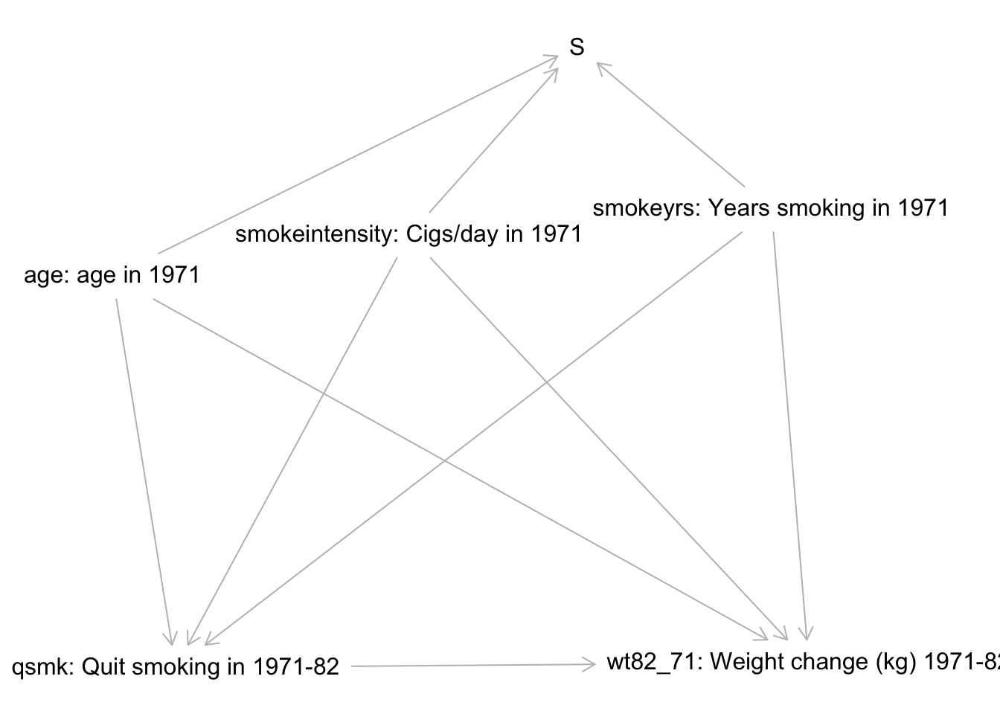

Topic 12 Applied Analysis: Inverse Probability Weighting
Learning Goals
IPTW1: Conduct and interpret results from an appropriate IPW analysis to estimate causal effects and effect modification of causal effects.

Analysis
You can download a template RMarkdown file to start from here.
We’ll be looking at the dataset explored in our WHATIF book to answer the question:
How does smoking cessation affect weight gain?
The data are available in the cidata package. Install this package (you may need to install the remotes package first):
remotes::install_github("malcolmbarrett/cidata") Our data come from the National Health and Nutrition Examination Survey Data I Epidemiologic Follow-up Study (NHEFS).
We will use the nhefs_complete dataset which has removed cases with missing data for some key variables. More information is available via ?nhefs_complete. The variable codebook is available as nhefs_codebook.
library(survey) # You may need to install the survey package
library(dplyr)
library(ggplot2)
library(splines)
library(cidata)
data(nhefs_complete) # Load the data
View(nhefs_codebook) # Look at the variable codebookPart 1: Causal graph analysis
Use the causal graph below as a starting point for the analysis. The selection node S indicates those for whom we have complete data. The treatment variable is qsmk, and the outcome variable is wt82_71.
- If this is the true causal graph underlying the data, can we achieve conditional exchangeability? Show your work fully.

Part 2: Propensity score modeling
Based on your causal graph analysis, fit an appropriate propensity score model. Use visualizations to inform the construction of your model. Accompany each visualization with a brief description of what it helps you decide.
Use your model to compute appropriate weights, and add these weights to the dataset.
Use “before and after” visualizations to compare balance of key variables before and after weighting. Write a few sentences summarizing your conclusions from this stage.
The code below adds logistic regression smoothing lines to ggplot2 figures:
ggplot(data, aes(x = X, y = y)) +
geom_point() +
geom_smooth(se = FALSE, color = "blue") +
geom_smooth(formula = y~ns(x,2), method = "glm",
method.args = list(family="binomial"),
se = FALSE, color = "red"
)The (incomplete) code below is useful for computing appropriate weights:
your_data <- your_data %>%
mutate(
ps = predict(ps_mod, newdata = your_data, type = "response"),
ip_weight = case_when(
A==1 ~ ???,
A==0 ~ ???
)
)You can incorporate weights into most ggplot2 figures by adding weight to the aesthetics:
aes(..., weight = ip_weight)Part 3: Modeling with IP weights
Assuming that you have added the ip_weight variable to the nhefs_complete dataset, the code below fits the model
\[ E[Y^a] = \beta_0 + \beta_1a \]
(As discussed in 12.4 of WHATIF, this model is called a marginal structural model (MSM).)
# Set up information about weights
design <- svydesign(ids = ~0, weights = nhefs_complete$ip_weight, data = nhefs_complete)
msm_fit <- svyglm(
wt82_71 ~ qsmk,
data = data,
design = design
)
summary(msm_fit)
confint(msm_fit)Fit a marginal structural model to estimate the overall average causal effect.
Construct a visualization to explore if the causal effect of smoking cessation might differ by prior smoking intensity (
smokeintensity). Briefly interpret your visualization.Fit a model to estimate how the average causal effect differs across smoking intensity. (Adapt the
svyglm()formula in the same way you would forlm().)Using both the confidence intervals and effect magnitudes, discuss the results of your analysis in a contextually meaningful way.